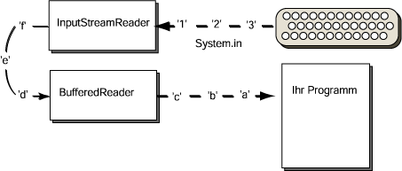

Montageband
Das BufferedReader-Objekt verwendet
das InputStreamReader-Objekt als seine Verbindung zu
System.in.
Diese Verbindung wird hergestellt wenn das BufferedReader-Objekt konstruiert wird:
BufferedReader stdin =
new BufferedReader(inStream );
Stellen Sie sich dieses als Montageband vor: System.in
bekommt Zeichen von der Tastatur.
Der InputStreamReader liest die Zeichen von
System.in und übergibt sie an den BufferedReader.
Das BufferedReader-Objekt übergibt die Daten an Ihr Programm, sobald sie verlangt werden.

Wenn Sie die Abbildung betrachten, sehen Sie warum das ein
"Eingabestrom" genannt wird.
Daten strömen von der Tastatur herein und durchlaufen
verschiedene Verarbeitungsstufen bevor sie zu Ihrem Programm gelangen.
Sie müssen sich das jetzt nicht merken oder all dieses vollständig verstehen.
Es ist verwirrend.
Tatsächlich verwenden an dieser Stelle viele Bücher ihre eigenen einfacheren Eingabemethoden
(die üblicherweise nicht viel mehr tun als das was vor sich geht zu verbergen).
FRAGE 11:

Betrachten Sie noch einmal diese zwei Anweisungen:
InputStreamReader inStream =
new InputStreamReader( System.in ) ;
BufferedReader stdin =
new BufferedReader( inStream );
Für was wird die Variable inStream verwendet?